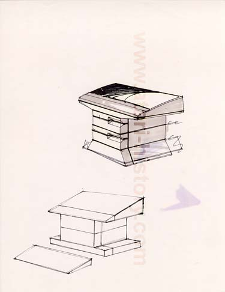

This concept design is quite interesting. This pedestal design
would consist of what appears to be a base with 2 diskette drive modules
and what looks to be a thermal printer. The unit would have
a detachable keyboard. The Atari Historical Society will be
speaking with former Atari Industrial Designer Tom Palecki to learn more
about this unusual pedestal system.